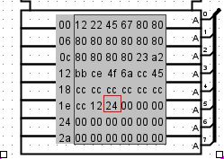
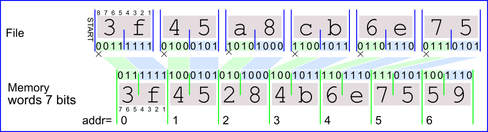

图像文件使用的文件格式故意简单； 这允许您编写一个程序（例如汇编程序）来生成可以加载的内存映像。 例如，如果我们有如下的记忆：

然后所有值都为零，生成的文件如下所示。
v2.0 raw 12 22 45 67 12*80 23 a2 bb ce 4f 6a cc 45 7*cc 12 24
第一行标识所使用的文件格式（当前，只有一种文件格式被识别为“原始”）。 后续值以十六进制形式列出值，从地址 0 开始； 您可以将多个这样的值放在同一行上。 如果文件的数据尺寸小于内存空间，则其余单元将不会更改。
图像文件可以使用游程编码； 例如，文件可以包含 12*80 ，而不是连续列出值 80 十二次。 请注意，重复次数以 10 为基数写入。Logisim 生成的文件将对至少四个值的游程使用游程长度编码。
您可以使用“#”符号将注释添加到文件中。 Logisim-evolution 将忽略“#”符号行中的所有字符。
如果文件中数据集的长度小于内存空间，则根据 项目选项中的参数，ROM和RAM的剩余单元将被初始化为0 ，到0或随机。
如果内存字的位宽小于文件中数据字的宽度。 过大的位将被忽略。
nter> 
下一节: 文件v3字 .